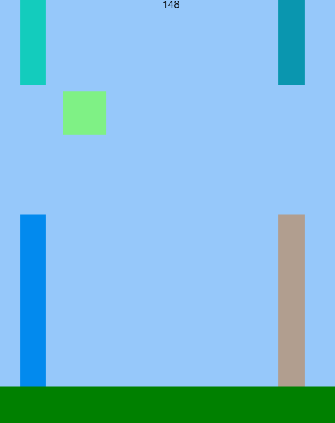
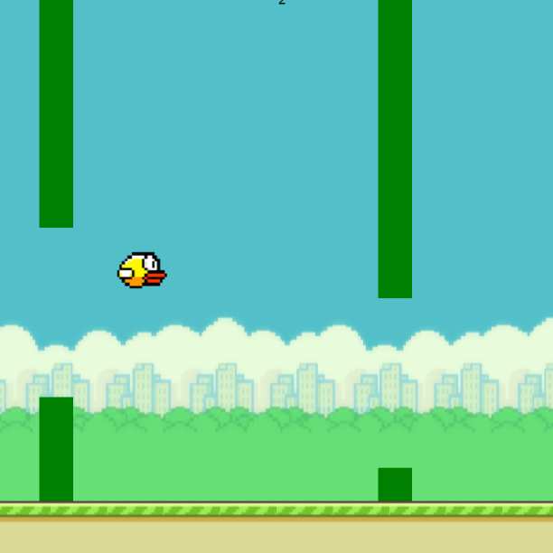
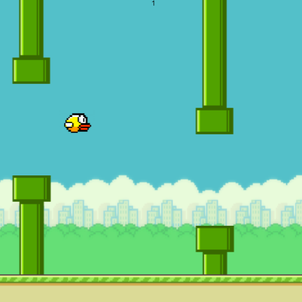

Overview and Usage
For my final project, I decided to create a simple sketch app using
P5.js that allows the user to draw, erase, pick the size of pen or
eraser, choose a color for the pen, clear canvas, and save their work.
In order to run my game, you can simply open the Flappy Bird Game
from the link and play the game directly. Alternatively, you could download the code from my GitHub Respository and run it from your local server.
Development Process
I broke this project up into several steps to complete it:
- First, I followed this Platform Tutorial that
teaches you how to build an endless runner.
- Once I got the tutorial working, I began making changes to it to make it gradually
more similar to a Flappy Bird game. For example, I made the ground all green and the
obstacles into long rectangles instead of squares randomly scattered across the screen.
I made two obstacle sprites, an upper and a lower one, then created a gap in between them
for the player to jump through.

In progress screenshot of MP3 Game
- Then, I randomized where the gaps will be and loaded in images for the bird, background,
and ground. I also changed the scoring so that points will only increase by one every time
the player jumps through a pair of pipes.

- Then I loaded in images for the obstacles.

- Lastly, I loaded in sound for when the player jumps, scores a point, and dies.
Issue Deep-Dive
I actually didn't have very significant issues in the programming part of this assignment,
but I ran into an issue when trying to deploy my website using GitHub Pages.
Ideas and Future
Here are some ideas and features I might like to add to my project in the
future for the final version:
- Adding an "undo" and "redo" button, allowing the user to go back or add back another stroke.
- Adding a "Shapes" option that allows the user to select a shape to draw. For example,
if they click on a circle icon, it will allow them to draw a perfect circle.
- This was one of my stretch goals, but adding a "fill" button that allows the user to
fill a certain area with a certain color. For example, if they drew a circle and would
like to color the circle red, they can use the "fill" option to easily do that.
Kudos
Here are some resources I found useful while working on this project:
- This
Platformer Tutorial
- These P5 Examples
demonstrating P5.play's core functionalities.
- Repl.it's website, as it allowed me to write my code
online and run it while seeing the immediate results on my screen. This made debugging my code much
easier.